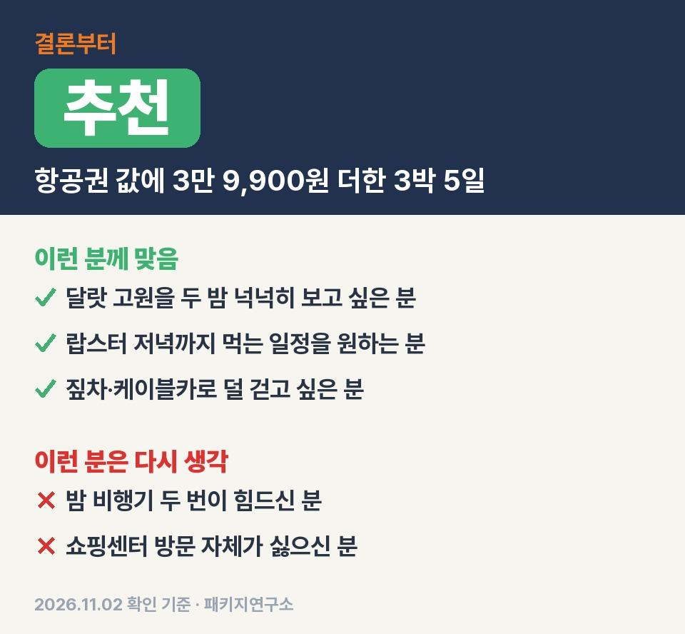
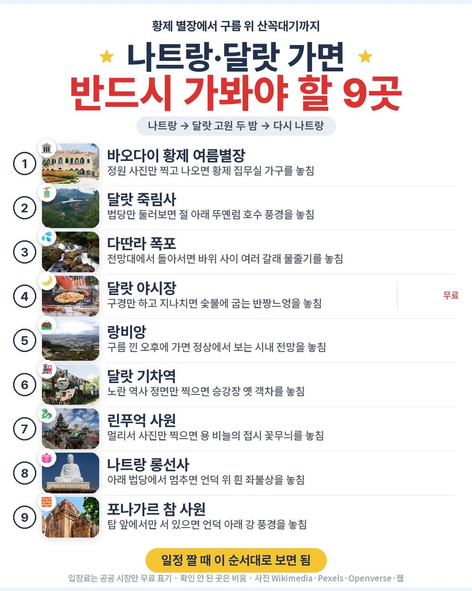
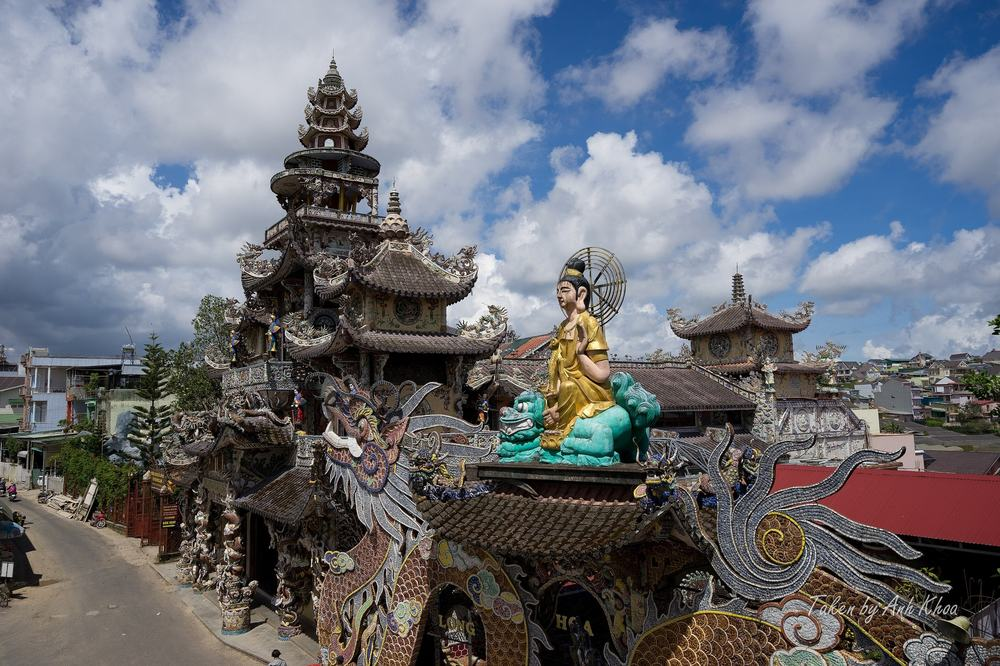
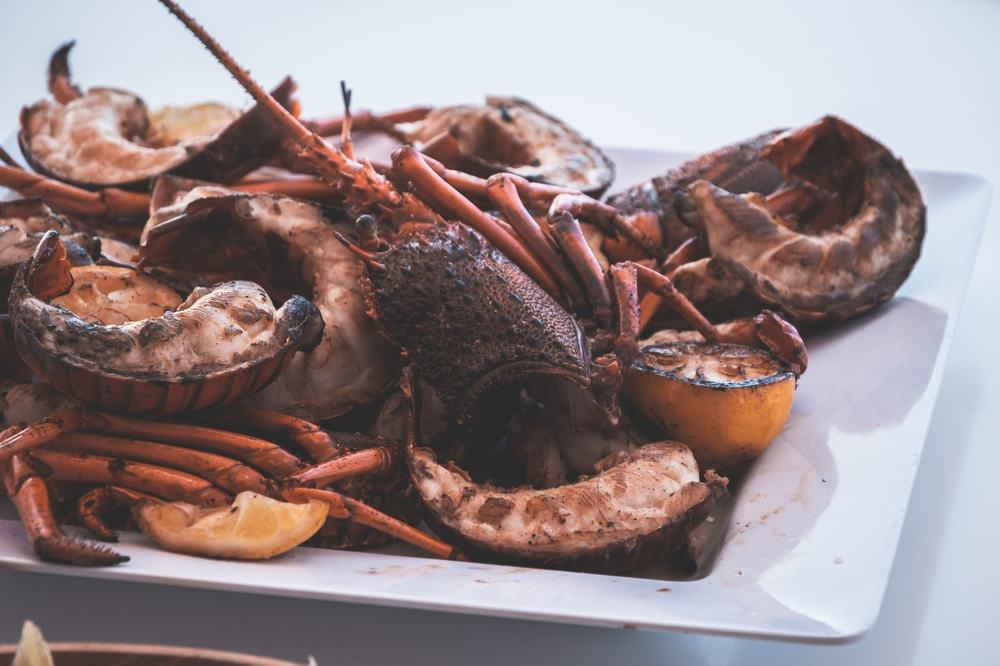
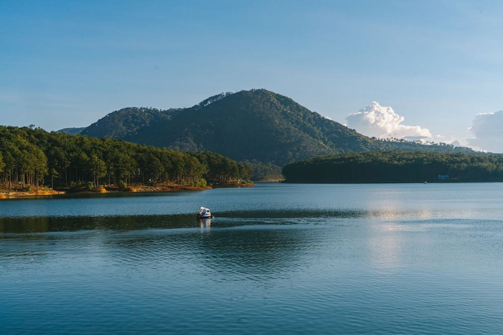
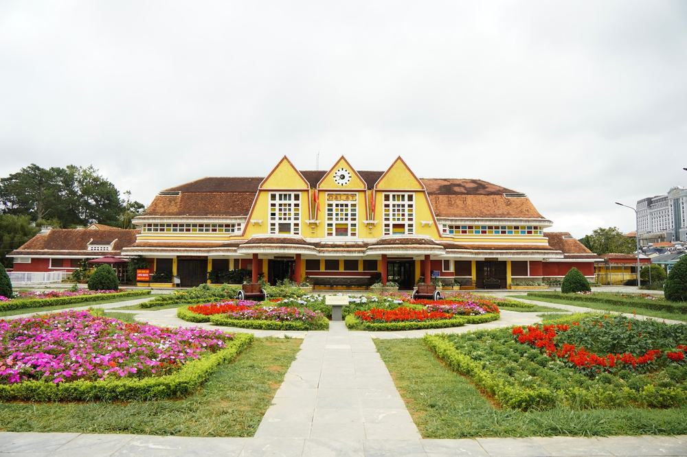

부모님 나트랑 노랑풍선 패키지 여행 46만 9,900원, 직항 항공권 값에 3만 9,900원 더한 달랏 2박
인천–깜란 직항 왕복을 두 달 하위 값으로만 사도 1인 43만원인데, 이 상품은 46만 9,900원에 달랏 두 밤과 랍스터 저녁이 붙어 있음.
직접 다녀온 후기는 아니고 노랑풍선 일정표와 포함·불포함 원문을 줄마다 따져 본 글임.
결론 — 추천. 호텔 세 밤, 식사 9회, 마사지 60분, 죽림사 케이블카, 랑비앙 짚차까지 들어 있음. 다만 밤 비행기 두 번이 힘드신 분은 맞지 않음.

같은 목적지 패키지 오늘 값 나란히 비교
https://package-researcher.github.io/d/nhatrang.html?s=art

| 항목 | 내용 |
|---|---|
| 가격 | 1인 469,900원 (성인 · 11월 출발 기준) · 2인 939,800원 |
| 여행사 | 노랑풍선 |
| 항공 | 제주항공 직항 (7C2303·7C2304) · 인천 21:50 → 깜란 01:10 / 깜란 02:10 → 인천 09:05 |
| 숙소 | 나트랑 1박 + 달랏 2박 (예정 호텔 또는 동급 · 달랏은 같은 호텔 연박 · 2인 1실) |
| 일정 | 3박 5일 · 버스 · 한국어 가이드 · 식사 9회 · 쇼핑 3회 · 가이드·기사 경비 1인 50달러 별도 |
▶ 내 출발일 오늘 기준 요금 확인 (제휴 링크 · 예약 시 수수료를 받으며 가격은 같습니다)
▶ 11월 2일 기준 나트랑 패키지 최저 31만 9천원부터 — 출발일별 값 한 화면에: 비교 페이지
같은 일정을 비엣젯항공으로 가면 1인 39만 9,900원임 (11월 2일 기준 · 출발일마다 다름).
| 번호 | 내용 | 한 줄 답 |
|---|---|---|
| 1 | 이 값에 들어 있는 것 | 관광 11곳 |
| 2 | 현장에서 더 낼 돈 | 2인 약 13만원 |
| 3 | 일정과 체력 | 버스 약 11시간 |
| 4 | 자유여행으로 짜면 | 1인 약 101만원 |
| 5 | 맞는 분 · 안 맞는 분 | 3 대 3 |
1. 이 값에 들어 있는 것

46만 9,900원 안에 든 걸 하나씩 세 보면 이럼.
제주항공 직항 왕복, 호텔 세 밤, 식사 9회, 관광지 입장료, 여행자보험, 한국어 가이드, 전용 버스.
먹는 쪽이 은근 큼. 2일차 점심 낌자식당 해물 샤브샤브, 3일차 점심 안하우스 푸동 분짜·반쎄오, 3일차 저녁 한식. 그리고 4일차 저녁이 응온갤러리 씨푸드 뷔페인데 랍스터가 무제한임.
체험도 따로 돈 낼 게 없음. 죽림사 케이블카 편도, 랑비앙 짚차나 7인승 차, 전신 마사지 60분, 달랏 야시장 반짱느엉에 맥주나 음료 한 잔. 객실마다 달랏 와인 한 병도 나옴.
항공권 값에 3만 9,900원을 더하면 달랏 두 밤과 아홉 끼, 케이블카·짚차·마사지가 같이 따라옴.
여기서 제일 의외였던 건 마사지 60분이 선택관광이 아니라 포함이라는 점. 팁만 따로임.
선택관광은 있음. 묶음으로 고르면 180달러이고 다딴라 레일바이크·호수 보트처럼 30달러짜리를 하나씩 고를 수도 있음. 안 하면 근처에서 기다리면 됨.
2. 현장에서 더 낼 돈

| 항목 | 금액 | 필수/선택 | 비고 |
|---|---|---|---|
| 가이드·기사 경비 | 100달러 | 필수 | 1인 50달러 × 2명 (아동 동일) |
| 마사지 팁 | 자율 | 선택 | 포함된 마사지 60분의 팁 |
| 선택관광 | 0~360달러 | 선택 | 묶음 1인 180달러 · 낱개 30달러부터 |
| 매너 팁 | 자율 | 선택 | 관례 2~4달러 · 안 내도 불이익 없다고 안내됨 |
| 연말 호텔·갈라디너 | 해당 날짜만 | 해당 시 | 크리스마스·연말연시 출발이면 추가 |
| 합계 (2인 필수분) | 약 13만 3,500원 | 1달러 1,335원 기준 |
두 분 필수분은 경비 하나임. 상품가 93만 9,800원에 더하면 두 분 약 107만 3,300원, 한 분 약 53만원대.
반드시 더 나가는 돈은 경비 50달러 하나라 계산이 단순함. 나머지는 고르는 만큼임.
3. 일정과 체력

| 일차 | 가는 곳 | 버스 | 걷기 | 점심 · 저녁 |
|---|---|---|---|---|
| DAY 1 | 인천 21:50 출발 → 깜란 01:10 → 나트랑 호텔 | 약 40분 | 적음 | 없음 · 없음 |
| DAY 2 | 달랏 이동 → 바오다이 별장 → 죽림사 케이블카 → 다딴라 폭포 → 마사지 → 야시장 | 약 4시간 30분 | 보통 | 해물 샤브샤브 · 특별식 |
| DAY 3 | 랑비앙 → 달랏 기차역 → 린푸억 사원 → 달랏 대성당 | 약 1시간 30분 | 보통 | 분짜·반쎄오 · 한식 |
| DAY 4 | 나트랑 이동 → 쇼핑 3곳 → 롱선사 → 포나가르 참 사원 → 랍스터 뷔페 → 공항 | 약 5시간 | 보통 | 현지식 · 랍스터 뷔페 |
| DAY 5 | 깜란 02:10 → 인천 09:05 | 거의 없음 | 적음 | 없음 · 없음 |
버스는 나흘 동안 약 11시간 40분. 그중 7시간이 나트랑과 달랏 사이 고갯길 두 번임. 고갯길이라 멀미가 걱정되시면 약을 미리 챙기시면 편함.
달랏에선 같은 호텔에서 두 밤을 자서 3일차는 짐을 안 쌈. 랑비앙은 짚차로 오르니 걷는 양도 생각보다 적음.
힘든 날은 2일차와 4일차 이틀임. 3일차는 이동이 짧고 짐도 그대로라 사실상 쉬어 가는 날임.
4. 자유여행으로 짜면

| 항목 | 금액 | 근거 |
|---|---|---|
| 인천–깜란 왕복 항공 | 430,000원 | ICN↔CXR 직항 왕복 1인 (앞으로 두 달 직항 운임 하위 25% 값 · 2026-11-02 마이리얼트립 조회) |
| 호텔 3박 | 150,000원 | 2인 1실 1인분 (추정) |
| 식사 (9회) | 200,000원 | 랍스터 뷔페·샤브샤브 포함 (추정) |
| 케이블카·짚차·마사지·야시장 | 90,000원 | 1인 이용료 (추정) |
| 나트랑↔달랏 차량 | 100,000원 | 왕복 차량 1인분 (추정) |
| 공항 이동 | 20,000원 | 깜란 공항 왕복 (추정) |
| 여행자보험 · 유심 | 20,000원 | 5일 기준 (추정) |
| 가이드 | — | 자유여행은 없음 |
| 합계 | 약 1,010,000원 |
직접 짜면 1인 약 101만원, 패키지는 경비까지 1인 약 53만원대. 패키지가 47만원쯤 덜 듦.
근데 이건 항공 값이 크게 갈라놓은 결과임. 자유여행은 출발 시각을 고를 수 있고, 패키지는 갈 때·올 때 다 밤 비행기임.
항공권 하나 값에 가까운 돈으로 달랏 왕복 차량과 가이드까지 붙는 구조라, 처음 가는 달랏이면 계산이 패키지 쪽으로 기움.
5. 맞는 분 · 안 맞는 분

| 맞는 분 | 안 맞는 분 |
|---|---|
| 달랏 고원을 두 밤 넉넉히 보고 싶은 분 | 밤 비행기 두 번이 힘드신 분 |
| 랍스터 저녁까지 먹는 일정을 원하는 분 | 쇼핑센터 방문 자체가 싫으신 분 |
| 짚차·케이블카로 덜 걷고 싶은 분 | 버스 3시간 30분 두 번이 부담인 분 |
안 맞는 쪽도 길이 있음. 귀국은 아침 9시 5분 인천 도착이라 그날 오후는 쉴 수 있음. 쇼핑은 곳당 약 1시간이고 안 사도 됨.
걸리는 건 출발·도착 시각과 이동 거리 쪽이지 들어 있는 내용은 아님.
자주 묻는 질문
Q. 나트랑 패키지 쇼핑은 몇 번 가나요?
A. 이 상품은 3곳. 4일차 나트랑에서 침향, 커피·잡화, 상황버섯 매장을 곳당 약 1시간씩 들름. 구매는 자유임.
Q. 나트랑 패키지 가격 말고 현지에서 내는 돈은요?
A. 가이드·기사 경비 1인 50달러가 필수임. 마사지 팁과 선택관광은 고르는 만큼.
Q. 나트랑 패키지 노쇼핑 상품인가요?
A. 아님. 쇼핑 3회가 일정에 있음. 대신 그날 오후엔 롱선사·포나가르 참 사원을 돌고 저녁은 랍스터 뷔페임.
마무리
직항 항공권 값에 조금 더 얹어 달랏 두 밤과 랍스터 저녁까지 가져오는 상품.
밤 비행기만 괜찮으시면 이 값대에서 담긴 게 많은 편이라고 봄. 처음 달랏을 가시는 분께 특히 맞음.
출발일에 따라 값이 달라서 가시려는 날짜 요금부터 보시면 됨.
같은 목적지 패키지 오늘 값 나란히 비교
https://package-researcher.github.io/d/nhatrang.html?s=art
이 글에는 네이버 제휴 링크가 포함되어 있으며, 링크를 통해 예약하시면 일정 수수료를 받습니다. 가격은 동일합니다. 가격과 구성은 2026년 11월 2일 확인 기준이며 출발일에 따라 달라질 수 있습니다.
▶ 이 상품, 영상으로 보기 (유튜브)
▶ 나트랑 패키지 오늘 값 나란히 비교
▶ 같은 목적지 다른 여행사 패키지, 쇼핑·선택관광·가이드 경비까지 비교: pkg-lab.com
사진 출처 (저작자 · 라이선스):
Linh Phuoc Pagoda (31523654908) — CC BY-SA 2.0 (Wikimedia Commons) 원본
.jpg){kind=link}
Lang Biang mountain 1 — CC BY-SA 2.0 (Wikimedia Commons) 원본

그 밖의 사진: Pexels
쇼츠·클립 영상과 사진:
Em Gái Làm Bánh Tráng Nướng Rất Ngon Và Chuyên Ngh — OneNews (YouTube, CC BY) 원본
Dalat market, Vietnam — CC BY 2.0 (Wikimedia Commons) 원본

Langbiang Mountain (August 6, 2018) (30157439748) — CC BY-SA 2.0 (Wikimedia Commons) 원본
_(30157439748).jpg){kind=link}
🌊 Datanla Waterfall DaLat Vietnam — Wanderonomy (YouTube, CC BY) 원본